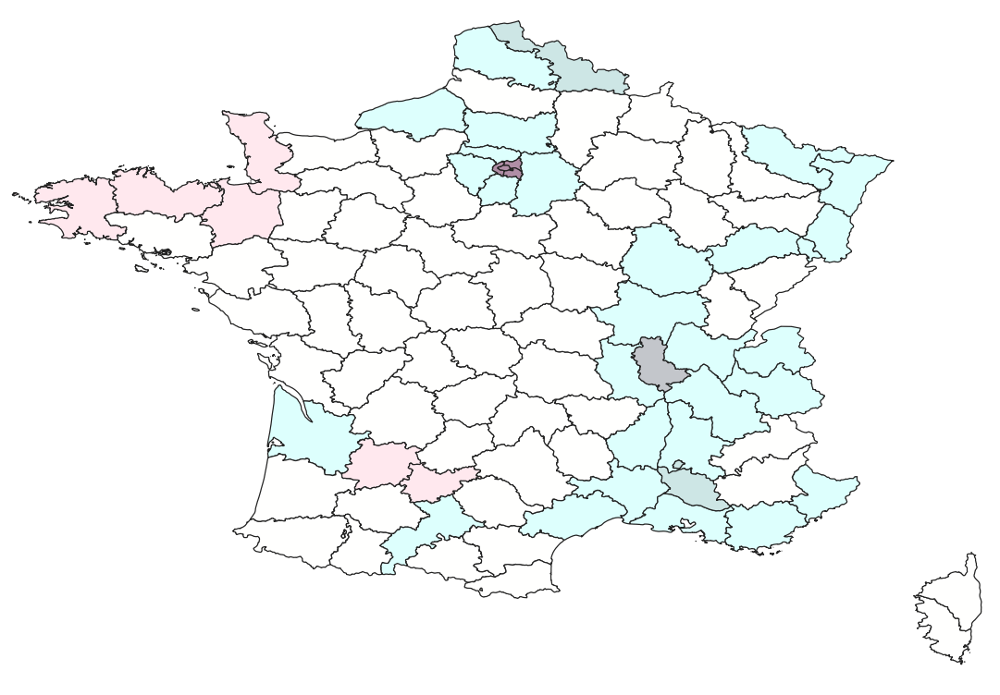

Results
Tables, charts and maps summarising land cover change, pollutant statistics, bivariate population–pollution patterns and exposure across France, 2021–2023.
assets/js/results-charts.js and the table rows
in this file with the real values from your .gpkg zonal statistics, and drop your exported
map screenshots into assets/img/results/ to replace the dashed placeholders.
Land Cover Change, 2021–2023
Step 5 — transition matrix (km²) between CORINE Land Cover classes
| 2021 \ 2023 | Artificial | Agricultural | Forest & semi-natural | Water |
|---|---|---|---|---|
| Artificial | 21,430 | 140 | 65 | 5 |
| Agricultural | 510 | 274,820 | 980 | 12 |
| Forest & semi-natural | 95 | 430 | 168,240 | 8 |
| Water | 3 | 6 | 4 | 16,120 |
Sample data — replace with the real transition matrix computed from FRANCE_LCC_2021_2023.tif.
Land cover change map
assets/img/results/lcc_2021_2023.pngPollutant Zonal Statistics
Step 6 — mean / min / max concentration per region, 2021–2023
| Crop Transition Class | Mean Change | Min Change | Max Change |
|---|---|---|---|
| Stable | -0.9458 | -4.6751 | 3.1563 |
| Gain | -0.9458 | -4.6751 | 3.1563 |
| Loss | -0.7137 | -4.6751 | 3.1563 |
Bar Char NO2
Sample data — µg/m³, 2023 annual mean
| Crop Transition Class | Mean Change | Min Change | Max Change |
|---|---|---|---|
| Stable | -0.8898 | -4.6751 | 3.1563 |
| Gain | -0.7395 | -4.6751 | 3.1563 |
| Loss | -0.7060 | -4.6751 | 3.1563 |
Bar Char PM2.5
Sample data — µg/m³, 2023 annual mean
| Crop Transition Class | Mean Change | Min Change | Max Change |
|---|---|---|---|
| Stable | -1.0476 | -4.3773 | 1.1967 |
| Gain | -0.9856 | -4.3773 | 1.1967 |
| Loss | -0.9227 | -4.3773 | 0.7946 |
Mean PM10 by region
Sample data — µg/m³, 2023 annual mean
Bivariate Mapping — Population × Pollution
Step 7 — combining pop_class_median and pol_class_max per zone

Dark cells indicate zones with both high population and high NO2 — the priority areas for mitigation.


Population Exposure
Step 8 — population (pop_sum) by dissolved pollutant class (pol_class_max)
NO2 exposure
Sample data — share of population per class
PM2.5 exposure
Sample data — share of population per class
PM10 exposure
Sample data — share of population per class
Download the Outputs
All 25 mandatory deliverables produced across Labs 2–4 (naming convention: FRANCE_*)